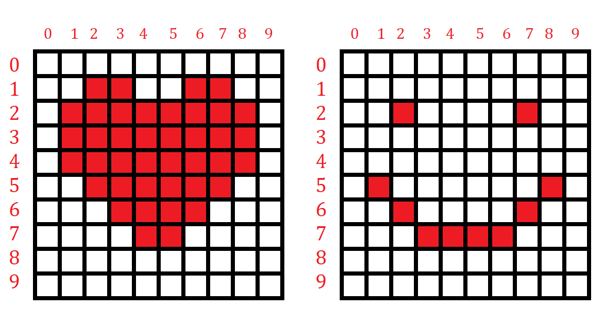
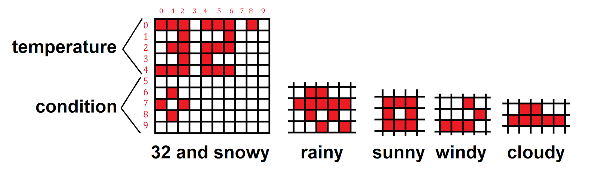

Software
PIC32
Our software for the PIC was essentially split up into three parts: waiting for a command, manual mode, and automatic mode. Before entering any of the code, our main was run and initialized the GPIO pins as follows:
Output:
B0, B1, B2, B3 - Top motor
B7, B13, B9, B11 - bottom motor
Input:
A3 - start signal from pi
A2 - data signal from pi
A4, B5, B14, B15 - signals from controller
Waiting for command:
Before the motors are allowed to move, a start signal from the pi must be received by the PIC32. We first tried to connect the pi and PIC32 through UART serial. Following instructions both on the ECE 4760 website and on online forums, we were able to successfully connect each of the devices individually to our laptops’ serial monitors. Unfortunately after several hours of work, we were not able to connect the two devices together through serial. Rather than struggling through this, we decided that we could implement our own version of serial by bit banging the data through the GPIO pins. This was a feasible option for us because our data was only 100 bits.
We used one output from the Pi to signal the start of transmission and then another output from the Pi to indicate zeros or ones in the data array separated by a 5 ms delay. On the PIC side, this data was read every 5 ms and appended to the PIC’s memory. The biggest issue we had with this was calibrating the timing. Our first run had several pixels that looked shifted several rows over. After measuring the signal from the pi with an oscilloscope, we found that the delay from the pi was actually slightly more than 5 ms. To minimize this discrepancy, we extended this delay to 20 ms and added an additional 15 ms every 20 reads to keep both sides of the transmission calibrated. After further testing, we found that this effectively solved our calibration issues despite being a relatively messy solution. With this in mind, the full data transmission takes approximately 2 seconds to occur (100 bits * 20 ms) which is a reasonable amount of time for operation.
Manual:
After receiving the data array from the pi, the PIC decides to operate either in manual mode or automatic mode. It does this by counting the number of zeros sent in the array. If and only if, the entirety of the 100 bits were 0 does the PIC then enter manual draw mode. In this mode, the motors are controlled very simply by the four buttons on the wired controllers. These buttons are tied low to ground over a 10 k Ohm resistor. To prevent the device from drawing too much current at the same time, we limited the movement to only one axis at a time, with priority in the y axis moving forward or backward over moving left or right. To exit draw mode, the device can be reset to wait for a new transmission across the pi communication lines.
Automatic:
After receiving the data array from the pi, the PIC decides to operate either in manual mode or automatic mode. It does this by counting the number of zeros sent in the array. If and only if, the entirety of the 100 bits were 0 does the PIC then enter manual draw mode. In this mode, the motors are controlled very simply by the four buttons on the wired controllers. These buttons are tied low to ground over a 10 k Ohm resistor. To prevent the device from drawing too much current at the same time, we limited the movement to only one axis at a time, with priority in the y axis moving forward or backward over moving left or right. To exit draw mode, the device can be reset to wait for a new transmission across the pi communication lines.
Raspberry Pi
As mentioned before, the raspberry pi is used for wifi connectivity and image processing, such that TOAST can be controlled and operated remotely. Currently the process is slightly convoluted because we did not have time to implement an app as originally planned.
First, the user SSHs into the pi from a host device such as a phone or computer. Next, if the user wishes to upload an image for toasting, they can save the image and use pscp, PuTTY Secure Copy client, to send the image over to the pi. If intending to use the device in weather or sketch mode, this step can be skipped.
Next, the user simply has to run the python script over SSH, along with a keyword indicating the mode. There are three keywords associated with the modes: weather, image, sketch. The command would look something like this:
python output.py weather
After this command has been sent, the pi runs a processing script according to the parameter sent, updating a 10x10 array of “1”s and “0”s to be sent to the pic.
Image
The pi will downsample the image to a 10x10 image, and will then go through pixel by pixel to decide if the pixel is dark or light, setting 1s or 0s accordingly. An example of two images are shown below.

Figure 13: Example Images
Weather
The pi uses a python weather api to collect data from Yahoo weather, namely the temperature and condition. We wrote predefined conditions for the values of the temperature to be written on the top half of the toast, and predefined graphics to represent the conditions windy, raining, snowing, and sunny. The layout and icons for conditions are shown below.

Figure 14: Example Weather print and condition icons
Sketch
The array is set to all zeros, which the pic will then read and interpret as sketch mode, letting the user move freely.
The Pi then uses a custom digital interface between the pic and the pi to let the pic know we are ready send data, and then transmit bit by bit the 10x10 array.
Further detailed commented code can be found in the Appendices